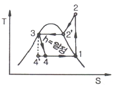
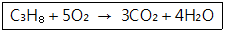
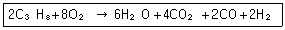
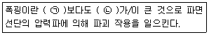
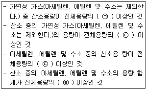

가스산업기사 (2009-03-01 기출문제)
1과목: 연소공학
1. 메탄 60vol%, 에탄 20vol%, 프로판 15vol%, 부탄 5vol%인 혼합가스의 공기 중 폭발하한계(vol%)는 약 얼마인가? (단, 각 성분의 하한계는 메탄 5.0vol%, 에탄 3.0vol%, 프로판 2.1vol%, 부탄 1.8vol%로 한다.)
- 2.5
- 3.0
- 3.5
- 4.0
(정답률: 82%)

2. 열역학 특성식으로 P1V1ⁿ=P2V2ⁿ이 있다. 이때 n값에 따른 상태변화를 옳게 나타낸 것은?
- n＝0 : 단열
- n＝1 : 등압
- n＝∞ : 등적
- n＝k : 등온
(정답률: 63%)
3. 아세틸렌(C2H2)의 위험도는? (단, 아세틸렌의 폭발범위는 2.5~81vol%)
- 0.97
- 31.4
- 32.4
- 78.5
(정답률: 88%)
4. 다음 T-S선도는 증기냉동 사이클을 표시한다. 이 중 1→2 과정을 무슨 과정이라고 하는가?

- 등온응축
- 등온팽창
- 단열팽창
- 단열압축
(정답률: 64%)
5. 실제가스가 이상기체 상태방정식을 만족하기 위한 조건으로 옳은 것은?
- 압력이 낮고, 온도가 높을 때
- 압력이 높고, 온도가 낮을 때
- 압력과 온도가 낮을 때
- 압력과 온도가 높을 때
(정답률: 87%)
6. 프로판 5L를 완전연소시키기 위한 이론공기량은 약 몇 L인가?

- 25
- 87
- 91
- 119
(정답률: 72%)
7. 다음 연소반응식 중 불완전연소에 해당하는 것은?
- S＋O2 → SO2
- 2H2＋O2 → 2H2O
- CH4＋5/2O2 → CO＋2H2O＋O2
- C＋O2 → CO2
(정답률: 85%)
8. 대기압 760mmHg 하에서 게이지 압력이 2atm이었다면 절대압력은 약 몇 psi인가?
- 22
- 33
- 44
- 55
(정답률: 66%)
9. 일산화탄소(CO)의 공기 중 연소범위값(vol%)으로 가장 옳은 것은?
- 4~75
- 12.5~74
- 7~73
- 5~15
(정답률: 84%)
10. 용기 내에서 혼합기체의 체적분율이 메탄(CH4) 35%, 수소(H2) 40%, 질소(N2) 25%이다. 이 혼합기체의 기체상수는 몇 kJ/kg·K인가?
- 0.50
- 0.54
- 0.58
- 0.62
(정답률: 41%)
11. 밀폐된 용기 속에 3atm, 25℃에서 프로판과 산소가 2 : 8의 몰비로 혼합되어 있으며 이것이 연소하면 다음 식과 같이 된다. 연소 후 용기 내의 온도가 2500K로 되었다면 용기 내의 압력은 약 몇 atm이 되는가?

- 3
- 15
- 25
- 35
(정답률: 47%)
12. 다음 중 염소 폭명기의 정의로서 옳은 것은 어느 것인가?
- 염소와 산소가 점화원에 의해 폭발적으로 반응하는 현상
- 염소와 수소가 점화원에 의해 폭발적으로 반응하는 현상
- 염화수소가 점화원에 의해 폭발하는 현상
- 염소가 물에 용해하여 염산이 되어 폭발하는 현상
(정답률: 84%)
13. 자연발화온도(Autoignition Tempetature : AIT)에 영향을 주는 요인에 대한 설명으로 틀린 것은?
- 산소량의 증가에 따라 AIT는 감소한다.
- 압력의 증가에 의하여 AIT는 감소한다.
- 용기의 크기가 작아짐에 따라 AIT는 감소한다.
- 유기화합물의 동족열 물질은 분자량이 증가할수록 AIT는 감소한다.
(정답률: 80%)
14. 연료와 공기를 인접한 2개의 분출구에서 각각 분출시켜 양자의 계면에서 연소를 일으키는 형태는?
- 분무연소
- 확산연소
- 액면연소
- 예혼합연소
(정답률: 65%)
15. 가정용 연료가스는 프로판과 부탄가스를 액화한 혼합물이다. 이 혼합물이 30℃에서 프로판과 부탄의 몰비가 5：1로 되어 있다면 이 용기 내의 압력은 약 몇 atm인가? (단, 30℃에서의 증기압은 프로판 9000mmHg이고, 부탄은 2400mmHg이다.)
- 2.6
- 5.5
- 8.8
- 10.4
(정답률: 58%)
16. 버너 출구에서 가연성 기체의 유출속도가 연소속도보다 큰 경우 불꽃이 노즐에 정착 되지 않고 꺼져버리는 현상을 무엇이라 하는가?
- boil over
- flash back
- blow off
- back fire
(정답률: 90%)
17. 다음 ( ) 안에 알맞은 내용은?

- ㉠ 음속, ㉡ 화염의 전파속도
- ㉠ 연소, ㉡ 화염의 전파속도
- ㉠ 화염온도, ㉡ 충격파
- ㉠ 화염의 전파속도, ㉡ 음속
(정답률: 84%)
18. 액체연료를 수 μm에서 수백 μm으로 만들어 증발 표면적을 크게 하여 연소시키는 것으로서 공업적으로 주로 사용되는 연소방법은?
- 액면연소
- 등심연소
- 분무연소
- 확산연소
(정답률: 77%)
19. 다음 중 연소한계에 대한 가장 옳은 설명은?
- 착화온도의 상한과 하한 값을 말한다.
- 화염온도의 상한과 하한 값을 말한다.
- 완전연소가 될 수 있는 산소의 농도 한계를 말한다.
- 연소가 될 수 있는 공기 중 가연성 가스의 최저 및 최고 농도를 말한다.
(정답률: 81%)
20. 가연성 가스의 발화도 범위가 300℃ 초과 450℃ 이하에 사용하는 방폭전기기기의 온도 등급은?
- T1
- T2
- T3
- T4
(정답률: 73%)
2과목: 가스설비
21. LP가스 사용시설에서 기화기를 이용할 경우 자연기화방식과의 비교 설명으로 옳은 것은?
- 비교적 부하의 변동이 적을 때 유리하다.
- 한랭지역에서는 사용이 불가능하다.
- 공급가스의 조성이 일정하다.
- 기화량의 조절이 어렵다.
(정답률: 68%)
22. 수소취성에 대한 설명으로 옳은 것은?
- 수소는 환원성 가스이므로 상온에서 부식문제를 고려해야 한다.
- 수소는 고온·고압에서 강 중의 철과 화합한다. 이것은 수소취성의 원인이 된다.
- 크롬은 수소취성에 대하여 취약한 재료이다.
- 수소는 고온·고압에서 강 중의 탄소와 결합하여 메탄을 생성한다.
(정답률: 67%)
23. 왕복식 압축기의 특징에 대한 설명으로 틀린 것은?
- 압축하면 맥동이 생기기 쉽다.
- 토출압력에 의한 용량변화가 적다.
- 기체의 비중에 영향이 없다.
- 원심형이어서 압축효율이 낮다.
(정답률: 80%)
24. 고압용기에 내압이 가해지는 경우 원주방향 응력은 길이방향 응력의 몇 배인가?
- 2
- 4
- 8
- 16
(정답률: 75%)
25. LiBr-H2O계 흡수식 냉동기에서 가열원으로서 가스가 사용되는 곳은?
- 증발기
- 흡수기
- 재생기
- 응축기
(정답률: 68%)
26. 정압기의 기본구조 중 2차 압력을 감지하여 그 2차 압력의 변동을 메인밸브로 전하는 부분은?
- 다이어프램
- 조정밸브
- 슬리브
- 웨이트
(정답률: 89%)
27. 용기의 내압시험 시 항구증가율이 몇 % 이하인 용기를 합격한 것으로 하는가?
- 3
- 5
- 7
- 10
(정답률: 88%)
28. 가스액화분리장치를 구성하는 장치가 아닌 것은?
- 한랭발생장치
- 정류(분축, 흡수)장치
- 내부연소식 반응장치
- 불순물 제거장치
(정답률: 60%)
29. 배관 보수·점검 시 분해가 쉬우며, 개스킷에 의하여 기밀이 유지되는 관이음은?
- 나사이음
- 신축이음
- 링이음
- 플랜지이음
(정답률: 75%)
30. 탄소강에서 탄소 함유량의 증가와 더불어 증가하는 성질은?
- 비열
- 열팽창률
- 탄성계수
- 열전도율
(정답률: 64%)
31. 카르노사이클 기관이 27℃와 -33℃ 사이에서 작동될 때 이 냉동기의 열효율은 어느 것인가?
- 0.2
- 0.25
- 4
- 5
(정답률: 63%)
32. 언로딩(unloading)형으로 정특성은 극히 좋으나, 안정성이 부족한 정압기의 형식은 어느 것인가?
- Fisher식
- KRF식
- Axial flow식
- Reynolds식
(정답률: 72%)
33. LNG와 SNG에 대한 설명으로 옳은 것은?
- 액상의 나프타를 LNG라 한다.
- SNG는 순수한 천연가스를 뜻한다.
- LNG는 액화천연가스를 뜻한다.
- SNG는 각종 도시가스를 총칭한 것이다.
(정답률: 81%)
34. 원심 펌프의 회전수가 2400rpm일 때 양정이 20m이고 송출유량이 3m3/min, 축동력은 10PS이다. 이 펌프를 3600rpm의 회전수로 운전한다면 양정은 몇 m가 되는가?
- 15
- 20
- 30
- 45
(정답률: 46%)
35. 실린더의 단면적 50cm2, 피스톤 행정 10cm, 회전수 200rpm, 체적효율 80%인 왕복압축기의 토출량은 약 몇 L/min인가?
- 60
- 80
- 100
- 120
(정답률: 65%)
36. 웨버지수에 대한 설명으로 옳은 것은 어느 것인가?
- 정압기의 동특성을 판단하는 중요한 수치이다.
- 배관 관경을 결정할 때 사용되는 수치이다.
- 가스의 연소성을 판단하는 중요한 수치이다.
- LPG 용기 설치본수 산정 시 사용되는 수치로 지역별 기화량을 고려한 값이다.
(정답률: 78%)
37. 정압기의 2차압 이상 상승의 원인이 아닌 것은?
- 바이패스밸브의 누설
- center 스템과 메인밸브의 접속 불량
- 파일럿의 cut-off 불량
- 필터의 먼지류 막힘
(정답률: 65%)
38. 구리 및 구리합금으로 된 장치를 사용할 수 있는 물질은?
- 아르곤
- 황화수소
- 아세틸렌
- 암모니아
(정답률: 74%)
39. 배관의 스케줄 번호를 정하기 위한 식은? (단, P는 사용압력(kg/cm2), S는 허용응력(kg/mm2)이다.)(오류 신고가 접수된 문제입니다. 반드시 정답과 해설을 확인하시기 바랍니다.)
- 10×(P/S)
- 10×(S/P)
- 1000×(P/S)
- 1000×(S/P)
(정답률: 75%)
40. 가스용 폴리에틸렌 배관의 융착이음 접합방법 분류에 해당되지 않는 것은?
- 맞대기 융착
- 소켓 융착
- 이음매 융착
- 새들 융착
(정답률: 47%)
3과목: 가스안전관리
41. 자동차 용기 충전시설에서 충전용 호스의 끝에 반드시 설치하여야 하는 것은?
- 긴급차단장치
- 가스누출경보기
- 정전기제거장치
- 인터록장치
(정답률: 84%)
42. 운반책임자를 동승시켜 운반해야 되는 경우에 해당되지 않는 것은?
- 압축산소 : 100m3이상
- 독성 압축가스 : 100m3이상
- 액화산소 : 6000kg 이상
- 독성 액화가스 : 1000kg 이상
(정답률: 73%)
43. 액화시안화수소가 고압가스안전관리법상 고압가스에 해당되기 위해서는 몇 ℃에서 몇 Pa을 초과하여야 하는가?
- 15℃, 0Pa
- 15℃, 0.2Pa
- 35℃, 0Pa
- 35℃, 0.2Pa
(정답률: 60%)
44. 차량에 고정된 초저온 탱크의 재검사 항목에 해당되지 않는 것은?
- 자분탐상검사
- 단열성능검사
- 기밀검사
- 내압시험
(정답률: 46%)
45. 차량에 고정된 탱크에 의한 운반 기준으로 옳지 않은 것은?
- 충전용기와 휘발유는 동일차량에 적재 하여 운반하지 못한다.
- 산소탱크의 내용적은 1만 6천L를 초과 하지 않아야 한다.
- 액화염소 탱크의 내용적은 1만 2천L를 초과하지 않아야 한다.
- 가연성 가스와 산소를 동일차량에 적재하여 운반하는 때에는 그 충전용기의 밸브가 서로 마주보지 않도록 적재 하여야 한다.
(정답률: 77%)
46. 냉동 용기에 표시된 각인 기호 및 단위로서 틀린 것은?
- 냉동능력 : RT
- 원동기소요전력 : kW
- 최고사용압력 : Dp
- 내압시험압력 : Ap
(정답률: 72%)
47. 다음은 고압가스를 제조하는 경우 압축금지 사항에 대한 내용이다. ( ) 안에 들어 갈 사항을 알맞게 나열한 것은?

- ㉠ 2% ㉡ 4% ㉢ 4% ㉣ 2%
- ㉠ 2% ㉡ 2% ㉢ 4% ㉣ 4%
- ㉠ 4% ㉡ 4% ㉢ 2% ㉣ 2%
- ㉠ 4% ㉡ 2% ㉢ 2% ㉣ 4%
(정답률: 68%)
48. 안전밸브의 작동압력이 6.0MPa일 때 내압 시험 압력은 몇 MPa인가?
- 4.8
- 5.5
- 6.8
- 7.5
(정답률: 50%)
49. 의료용 가스용기의 도색 표시가 옳게 연결된 것은?
- 질소－백색
- 액화탄산가스－회색
- 헬륨－자색
- 산소－흑색
(정답률: 72%)
50. 내압방폭구조의 가연성 가스 폭발등급을 분류할 때 최대 안전틈새기준으로 틀린 것은 어느 것인가?
- A등급 : 0.9mm 이상
- B등급 : 0.5mm 초과 0.9mm 미만
- C등급 : 0.5mm 이하
- D등급 : 0.3mm 이하
(정답률: 66%)
51. 방폭전기기기의 용기 내부에서 가연성 가스의 폭발이 발생할 경우 그 용기가 폭발압력에 견디고, 접합면, 개구부 등을 통해 외부의 가연성 가스에 인화되지 않도록 한 방폭구조는?
- 내압(耐壓)방폭구조
- 유입(油入)방폭구조
- 특수방폭구조
- 본질안전방폭구조
(정답률: 89%)
52. 고압가스 충전시설의 압축기 최종단에 설치된 안전밸브의 점검주기 기준으로 옳은 것은 어느 것인가?
- 매월 1회 이상
- 1년에 1회 이상
- 1주일에 1회 이상
- 2년에 1회 이상
(정답률: 66%)
53. 냉동기 냉매설비에 대하여 실시하는 기밀시험 압력의 기준으로 적합한 것은?
- 설계압력 이상의 압력
- 사용압력 이상의 압력
- 설계압력의 1.5배 이상의 압력
- 사용압력의 1.5배 이상의 압력
(정답률: 55%)
54. 시안화수소를 충전한 용기는 충전 후 24시간 정치하고, 그 후 1일 1회 이상 시험지로 가스의 누출검사를 하는데 이 때 사용되는 시험지는?
- 질산구리벤젠
- 동·암모니아
- 발연황산
- 하이드로설파이드
(정답률: 84%)
55. 실내에 메탄이 공기 중 폭발한계인 5%가 존재하는 경우 혼합공기 1m3에 함유된 메탄의 중량은 약 몇 g인가? (단, 표준상태기준이며, 메탄은 이상기체로 간주한다.)
- 35.7
- 357.0
- 24.4
- 244.0
(정답률: 42%)
56. 저장탱크를 지상에 설치하는 경우 몇 톤 이상일 때 방류둑을 설치하는가? (단, 독성 가스이다.)
- 5
- 10
- 50
- 100
(정답률: 78%)
57. 내용적 50L인 용기에 40kg/cm2의 수압을 걸었더니 내용적이 50.8L가 되었고 압력을 제거하여 대기압으로 하였더니 내용적이 50.02L가 되었다면 이 용기의 항구증가율은 몇 %이며, 이 용기는 사용이 가능한지를 판단하면?
- 1.6%, 가능
- 1.6%, 불능
- 2.5%, 가능
- 2.5%, 불능
(정답률: 75%)
58. 일반 가연성 가스 저장탱크 상호 간격이 인접한 경우 물분무장치는 저장탱크 외면으로부터 몇 m 이상의 거리에서 조작할 수 있어야 하는가?
- 5
- 10
- 15
- 30
(정답률: 73%)
59. 내용적 50L의 LPG 용기에 프로판을 충전할 때 최대충전량은 몇 kg인가? (단, 프로판의 충전정수는 2.35이다.)
- 19.15
- 21.28
- 32.62
- 117.5
(정답률: 74%)
60. 다음 중 독성 가스가 아닌 것은?
- 포스겐
- 세렌화수소
- 시안화수소
- 부타디엔
(정답률: 66%)
4과목: 가스계측
61. 다음 중 비중이 가장 큰 기체는?
- CO
- C4H10
- CO2
- C3H6
(정답률: 82%)
62. 와류유량계(Vortex Flow meter)의 특징에 대한 설명 중 틀린 것은?
- 압력손실이 차압식 유량계에 비하여 적다.
- 일반적으로 정도가 높다.
- 출력은 유량에 비례하며, 유량측정범위가 넓다.
- 기포가 많거나 점도가 높은 액에 적당 하다.
(정답률: 57%)
63. 다음은 한국산업규격에서 사용하는 부르돈관 압력계에 대한 용어의 정의이다. 이 중 틀린 것은?
- 게이지압은 진공을 기준으로 하여 표시한 압력을 말한다.
- 압력계는 양의 게이지압을 측정하는 것을 말한다.
- 진공계는 음의 게이지압을 측정하는 것을 말한다.
- 연성계는 양 및 음의 게이지압을 측정 하는 것을 말한다.
(정답률: 63%)
64. 액화석유가스에 첨가하는 냄새가 나는 물질의 측정방법이 아닌 것은?
- 패널법
- Odor 미터법
- 냄새주머니법
- 주사기법
(정답률: 64%)
65. 다음 중 전자유량계의 원리는?
- 옴(Ohms)의 법칙
- 베르누이(Bernoulli)의 법칙
- 아르키메데스(Archimedes)의 원리
- 패러데이(Faraday)의 전자유도 법칙
(정답률: 87%)
66. 기체가 흐르는 관 안에 설치된 피토관의 수주높이가 0.46m일 때 기체의 유속은 약 몇 m/s인가?
- 3
- 4
- 5
- 6
(정답률: 58%)
67. 가스검지법 중 아세틸렌에 대한 염화제1구리착염지의 반응색은?
- 청색
- 적색
- 흑색
- 황색
(정답률: 76%)
68. 분별연소법 중 파라듐관 연소분석법에서 촉매로 사용되지 않는 것은?
- 구리
- 파라듐 흑연
- 백금
- 실리카겔
(정답률: 59%)
69. 여러 번 측정하여 통계적으로 처리하는 오차는?
- 기차(Instrumental error)
- 이론오차
- 착오(Mistake)
- 우연오차(Accidental error)
(정답률: 52%)
70. 어느 가정에 설치된 가스미터의 기차를 검사하기 위해 계량기의 지시량을 보니 100m3이었다. 다시 기준기로 측정하였더니 95m3이었다면 기차는 몇 %인가?
- 0.⑤
- 0.95
- 5
- 95
(정답률: 67%)
71. 일반적으로 가장 낮은 온도를 측정할 수 있는 온도계는?
- 유리 온도계
- 압력 온도계
- 색 온도계
- 열전대 온도계
(정답률: 53%)
72. 전기세탁기, 자동판매기, 승강기, 교통신호기 등에 기본적으로 응용되는 제어는?
- 피드백 제어
- 시퀀스 제어
- 정치제어
- 프로세스 제어
(정답률: 78%)
73. 기체 크로마토그램을 분석하였더니 지속용 량(retention volume)이 2mL이고, 지속 시 간(retention time)이 5min이었다면 운반기체의 유속은 약 몇 mL/min인가?
- 0.2
- 0.4
- 5.0
- 10.0
(정답률: 67%)
74. 오리피스로 유량을 측정하는 경우 압력차가 4배로 변하면 유량은 몇 배로 변하는가?
- 2
- 4
- 8
- 16
(정답률: 72%)
75. 용적식 유량계에 해당되지 않는 것은?
- 루트식
- 피스톤식
- 오벌식
- 로터리피스톤식
(정답률: 57%)
76. 다음 중 헴펠식 가스분석에 대한 설명으로 틀린 것은?
- 이산화탄소는 30% KOH 용액에 흡수시킨다.
- 산소는 염화구리 용액에 흡수시킨다.
- 중탄화수소는 무수황산 25%를 포함한 발연황산에 흡수시킨다.
- 수소는 연소시켜 감량으로 정량한다.
(정답률: 58%)
77. 부르돈(Bourdon)관 압력계에 대한 설명으로 옳은 것은?
- 일종의 탄성식 압력계이다.
- 여러 형태 중 직선형 부르동관이 주로 쓰인다.
- 저압측정용으로 적합하다.
- 10-3mmHg 정도의 진공측정에 쓰인다.
(정답률: 66%)
78. 기체 크로마토그래피의 측정원리로서 가장 옳은 설명은?
- 흡착제를 충전한 관속에 혼합시료를 넣고, 용제를 유동시켜 흡수력 차이에 따라 성분의 분리가 일어난다.
- 관속을 지나가는 혼합기체 시료가 운반기체에 따라 분리가 일어난다.
- 혼합기체의 성분이 운반기체에 녹는 용해도 차이에 따라 성분의 분리가 일어난다.
- 혼합기체의 성분은 관내에 자기장의 세기에 따라 분리가 일어난다.
(정답률: 64%)
79. 가스미터에 0.3L/rev의 표시가 의미하는 것은?
- 사용최대유량이 0.3L
- 계량실의 1주기 체적이 0.3L
- 사용최소유량이 0.3L
- 계량실의 흐름속도가 0.3L
(정답률: 84%)
80. 차압식 유량계의 조임(교축)기구 중 오리피스에 대한 설명으로 틀린 것은?
- 오리피스는 중앙에 둥근 구멍이 뚫린 한 장의 원판이며 가격이 저렴하고 제작, 검사가 용이하기 때문에 널리 이용되고 있다.
- 유체의 압력손실이 크다.
- 고속유체나 고형물을 포함한 유체의 유량 측정에 적합하다.
- 차압의 취출 방법에는 코너탭, D·D/2탭, 플랜지탭 등이 있다.
(정답률: 51%)
메탄 60vol%의 하한계 = 5.0vol% × 0.6 = 3.0vol%
에탄 20vol%의 하한계 = 3.0vol% × 0.2 = 0.6vol%
프로판 15vol%의 하한계 = 2.1vol% × 0.15 = 0.315vol%
부탄 5vol%의 하한계 = 1.8vol% × 0.⑤ = 0.09vol%
따라서, 혼합가스의 폭발하한계는 3.0vol% + 0.6vol% + 0.315vol% + 0.09vol% = 4.0⑤vol% 이다. 이 값은 보기에서 주어진 값 중에서 가장 가깝지만, 반올림하여 정답은 "3.5"가 된다.